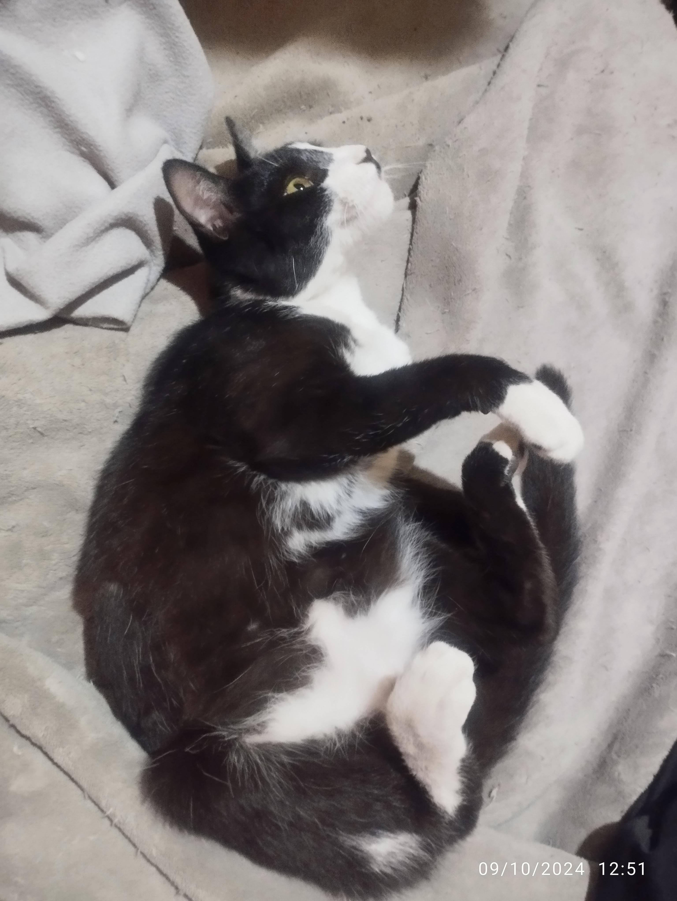

En Adopción Responsable

Tenemos en adopción a Taylor gata de aproximadamente 8 meses, de tamaño pequeño y muy juguetona.
Llegó a casa malnutrida y con una deformidad en la cadera producto de un accidente que sufrió y no fue tratado, actualmente esta castrada, vacunada y desparasitada, no presenta problemas de movilidad, le encanta correr y jugar con cualquier cosa que encuentre (en especial bichos), y recibir mimos